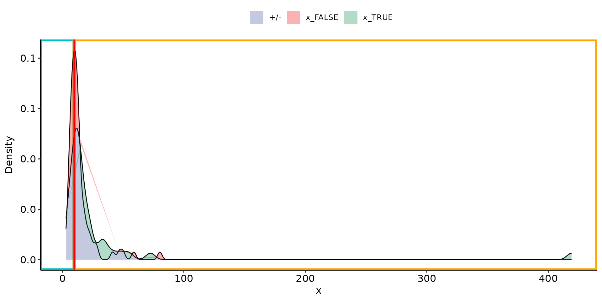
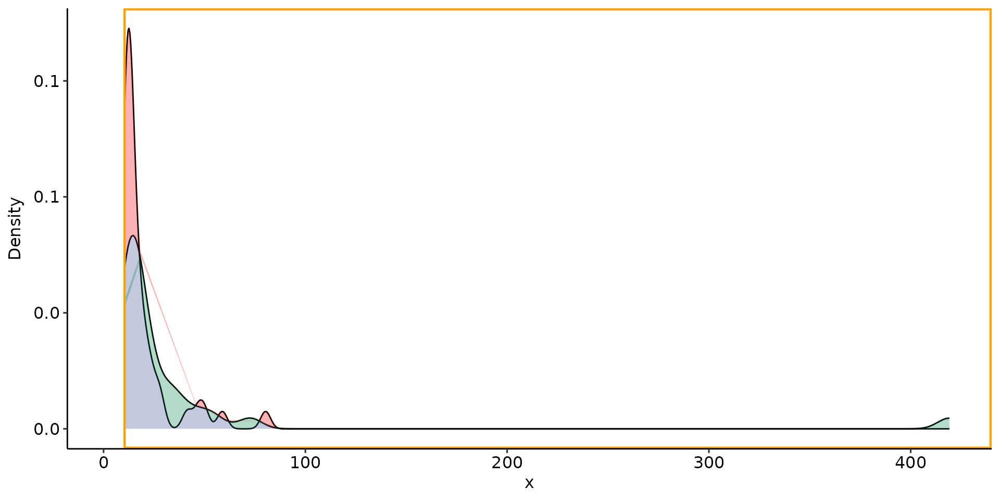
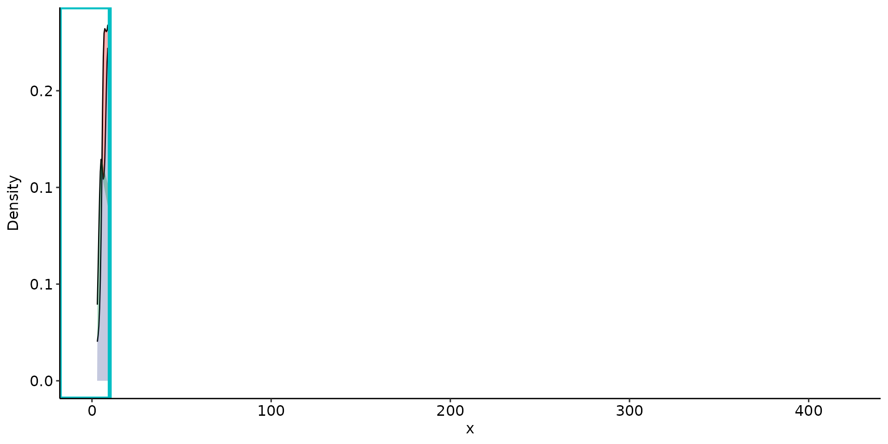
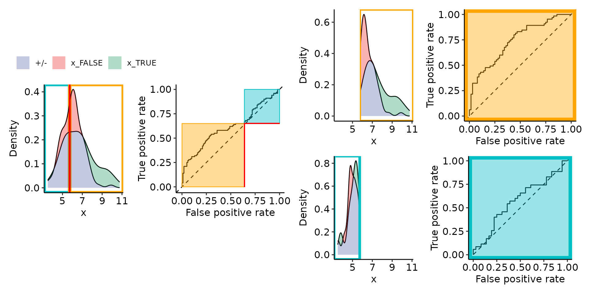

Vignette 02: Restriction plots
vignette_02_restriction_plots.Rmd
options(warn = 1)
library(restrictedROC)
data(aSAH, package = "pROC")
# In this here are three warnings:
# Warning messages:
# 1: In get_all_aucs_fun(full_roc = full_roc, true_pred_df = true_pred_df, :
# get_all_aucs_norecalculation() does not calculate single ROC curves, therefore cannot return them
# 2: In get_all_aucs_fun(full_roc = full_roc, true_pred_df = true_pred_df, :
# get_all_aucs_norecalculation() does not calculate single ROC curves, therefore cannot return them
# 3: In plot_rROC_part(ret_procs) :
# Threshold
# 10
# not found, using the closest instead:
# 9.9
ret_procs <- simple_rROC(
response = aSAH$outcome,
predictor = aSAH$ndka,
return_proc = TRUE
)
#> Positive label not given, setting to last level of factor: Poor
print(plot_rROC_part(ret_procs, threshold = 10))
#> Warning in plot_rROC_part_single(x, ...):
#> Threshold
#> 10
#> not found, using the closest instead:
#> 9.9
#> $plotlist
#> $plotlist$A
#>
#> $plotlist$B
#>
#> $plotlist$C
#>
#> $plotlist$D
#>
#> $plotlist$E
#>
#> $plotlist$F
#>
#>
#> $patchworked
current_sim <- function(dists) {
# restrictedROC::sim(dists, do_melt = FALSE, length.out = 2500)
restrictedROC::sim(dists, do_melt = FALSE, length.out = 100)
}
set.seed(129387)
simdata <- current_sim(
list(
"Positive" = function(length.out) {
unif <- runif(length.out)
vapply(unif, function(x) {
if (x > .2) {
rnorm(1, mean = 6, sd = 1)
} else {
rnorm(1, mean = 9, sd = 1)
}
}, numeric(1))
},
"Negative" = function(length.out) {
unif <- runif(length.out)
vapply(unif, function(x) {
if (x > .02) {
rnorm(1, mean = 6, sd = 1)
} else {
rnorm(1, mean = 9, sd = 1)
}
}, numeric(1))
}
)
)
simdata_melted <- restrictedROC::melt_gendata(simdata)
colnames(simdata_melted) <- c("predictor", "response")
rroc <- restrictedROC::simple_rROC(
response = simdata_melted[["response"]],
predictor = simdata_melted[["predictor"]],
positive_label = "Positive",
direction = "<",
return_proc = TRUE
)
rroc_interpret <- restrictedROC::simple_rROC_interpret(
rroc,
use_abs_rzAUC = TRUE # is default
)
point_25 <- rroc_interpret$performance[which.max(rroc_interpret$performance[["rzAUC_high"]]), ]
rroc_plots <- plot_rROC_part(
rroc,
fpr = point_25[["fpr_global"]]
)
rroc_plots_threshold <- plot_rROC_part(
rroc,
threshold = point_25[["threshold"]]
)
# pdf("removeme.pdf", width=15)
print(rroc_plots$patchworked)
print(rroc_plots_threshold$patchworked)
# dev.off()